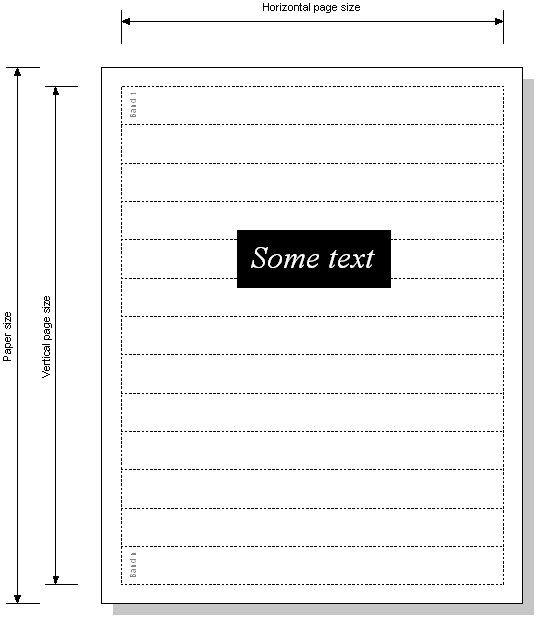

|
| |
.pdl fileA .pdl file is a plugin DLL. The DLL must:
implement a class derived from CPdrDevice
implement a class derived from CPdrControl
export a function at the ordinal 1 position that creates, and returns a pointer to, an instance of the CPdrDevice derived class. This allows an
instance of the printer driver to be created and controlled by the application wishing to print. By convention, this exported function is named NewPrinterDeviceL() and is prototyped as:
CPrinterDevice* NewPrinterDeviceL();
CPdrDevice-derived classA new printer device is defined by a CPdrDevice derived class.
CPdrDevice is derived from CPrinterDevice and implements functionality for a printer driver.
CPdrDevice is an internal class that simply provides an implementation for functions defined in its base classes. However, printer drivers must provide the following:
The CreateContext() function, defined in CGraphicsDevice, must be implemented, and should create a graphics context for this printer device. This context will be used by
the GDI to draw to the printer. This is similar to the way that the screen graphics context is used to draw to the screen.
For example, the EPSON printer driver implements this as:
TInt CEpsonDevice::CreateContext(CGraphicsContext*& aGC)
{
__ASSERT_DEBUG(iControl,Panic(EEpsonControlDoesNotExist));
CPdrControl* control=(CPdrControl*) iControl;
return control->CreateContext(aGC);
}
The CreateControlL() function, defined in CPrinterDevice, should create the printer control, an instance of the CPdrControl derived class, used to control the progress of the printing
of pages. The argument passed to this function is the printer port on which the printer should be found.
For example, the EPSON printer driver implements this as:
void CEpsonDevice::CreateControlL(CPrinterPort* aPrinterPort)
{
__ASSERT_ALWAYS(aPrinterPort,Panic(EEpsonRequiresPrinterPort));
__ASSERT_ALWAYS(!iControl,Panic(EEpsonControlAlreadyExists));
__ASSERT_DEBUG(iCurrentPageSpecInTwips.iPortraitPageSize.iWidth && iCurrentPageSpecInTwips.iPortraitPageSize.iHeight,Panic(EEpsonPageSpecNotSet));
iControl = CEpsonControl::NewL(this,aPrinterPort,*iStore,iModelInfo->iResourcesStreamId);
}
Consideration should be given to the following points:
The KPixelSizeInTwips() member function implemented by CPdrDevice returns the pixel size of the printer device; this depends on the orientation, i.e. whether it is in landscape or portrait mode. For most devices this is acceptable. Where this assumption is not true, for example, for devices which do not support landscape mode, this function needs to be overridden in the derived class.
The default implementation is:
{
TSize size;
if (iCurrentPageSpecInTwips.iOrientation == TPageSpec::EPortrait)
size = TSize(iModelInfo->iKPixelWidthInTwips, iModelInfo->iKPixelHeightInTwips);
else if (iCurrentPageSpecInTwips.iOrientation == TPageSpec::ELandscape)
size = TSize(iModelInfo->iKPixelHeightInTwips, iModelInfo->iKPixelWidthInTwips);
return size;
}
A constructor and a destructor may be required, depending on the needs of the printer driver class.
|
CPdrControl-derived classThis class defines the printer control.
CPdrControl is derived from CPrinterControl and implements functionality for a printer control.
CPdrControl is an internal class that simply provides an implementation for functions defined in its base classes.
The printing process prints each page as a number of bands as the following drawing shows:

The printer driver splits up the page into a number of bands, and the print process then processes the bands, starting at the top, outputting the graphics and text for each separate band. The most important function to be implemented by the derived class is OutputBandL().
This function is called repeatedly during printing, by the printer control's QueueGetBand() function. Its purpose is to place any text or graphics contained within that band into the printer buffer.
Note that any text on the page is prepared before this banded printing process begins - on a notional band 0. Any text is either output to the printer, for page printers which can handle text positioning separately from graphics - e.g. PCL and postscript printers, or is put into a buffer ready for when it is needed later in the banding process.
The MoveToL() function should place in the printer buffer the correct codes to perform a move to a particular point in
the band - this is used when there is no graphics drawing to do until that point.
The SetPageSizeL() function should specify the area of the page which the printer can physically print, i.e. the print
margins.
Typically, a derived class will define a static NewL() function to create an instance of the class. This will take the set of parameters of type CPdrDevice*, CPrinterPort*, CStreamStore&, TStreamId. For example, for the Epson driver:
CEpsonControl* CEpsonControl::NewL(CPdrDevice* aPdrDevice,CPrinterPort* aPrinterPort,CStreamStore& aStore,TStreamId aResourcesStreamId)
{
CEpsonControl* control=new(ELeave) CEpsonControl(aPdrDevice,aPrinterPort);
CleanupStack::PushL(control);
control->ConstructL(aStore,aResourcesStreamId);
CleanupStack::Pop();
return control;
}
|
The following class definitions are for the EPSON driver:
class CEpsonDevice : public CPdrDevice
{
public:
CEpsonDevice();
~CEpsonDevice();
TInt CreateContext(CGraphicsContext*& aGC);
void CreateControlL(CPrinterPort* aPrinterPort);
protected:
TSize KPixelSizeInTwips() const;
};
class CEpsonControl : public CPdrControl
{
public:
static CEpsonControl* NewL(CPdrDevice* aPdrDevice,
CPrinterPort* aPrinterPort,CStreamStore& aStore,
TStreamId aResourcesStreamId);
~CEpsonControl();
// print control functions
protected:
CEpsonControl(CPdrDevice* aPdrDevice,CPrinterPort* aPrinterPort);
void ConstructL(CStreamStore& aStore,TStreamId aResourcesStreamId);
void OutputBandL();
void MoveToL(const TPoint& aPoint);
TBool TransformBuffer();
void SetPageSizeL();
protected:
TBuf8<KEpsonNumScanLinesPerBand>>3> iScanLine;
};
Copyright ©2002 Symbian Ltd. 6.1-00174 |
|